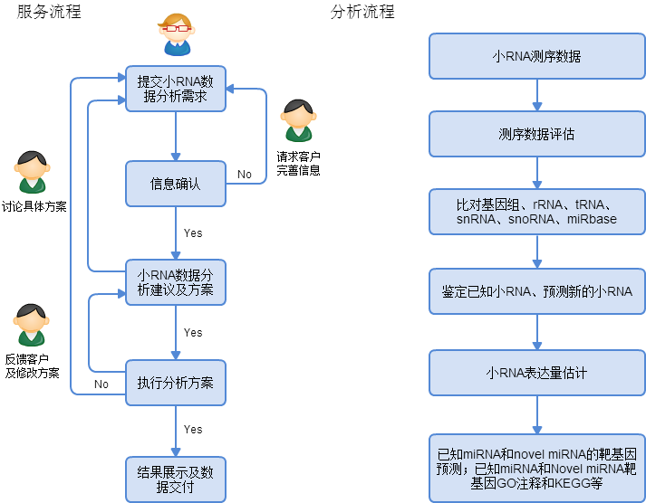

小RNA数据分析
小RNA（small RNA）是一类重要的转录后调控因子，也是非编码RNA中的一类，主要包括miRNA、piRNA和siRNA。它的功能主要是诱导基因沉默，参与基因转录后调控，从而调节细胞生长、分化，以及个体发育、生殖等重要生物学过程。利用高通量测序，可以一次性获得大量18-30nt的RNA短片段，再经过生物信息分析，可以得到样品中的小RNA序列信息。利用小RNA序列信息，可以预测新的小RNA，也可以用来预测靶标基因。周易数据分析团队在小RNA分析方法有丰富经验，可以为客户提供各种小RNA数据分析服务。
服务及分析流程

小RNA数据整理
- 数据所属样品信息：人肌肉组织、老鼠肝组织、水稻根组织等；
- 样品设计：对照比较策略；
- 测序平台：Solexa, Illumina 2000等；
- 数据分析目的：生物学假设，基因寻找等；
- 其它信息，提供详尽的信息有利于分析员给出合理有价值的建议。
参考文献：
- Betel, Doron, et al. "The microRNA. org resource: targets and expression." Nucleic acids research 36.suppl 1 (2008): D149-D153.
- Landgraf, Pablo, et al. "A mammalian microRNA expression atlas based on small RNA library sequencing." Cell 129.7 (2007): 1401-1414.
- Griffiths-Jones, Sam, et al. "miRBase: microRNA sequences, targets and gene nomenclature." Nucleic acids research 34.suppl 1 (2006): D140-D144.
周易数据团队所收集的数据集均来自开源公共生物信息数据库。
所有研究材料和技术数据的交流，周易数据团队会严格遵守保密协议，不会向任何第三方透露相关信息。
欢迎客户来电咨询，如有分析需求，请整理小RNA数据信息并发送至zyxdata@163.com，我们会尽快回复客户。
注意：测序原始数据，将会在信息确认后，通过其它方法上传。